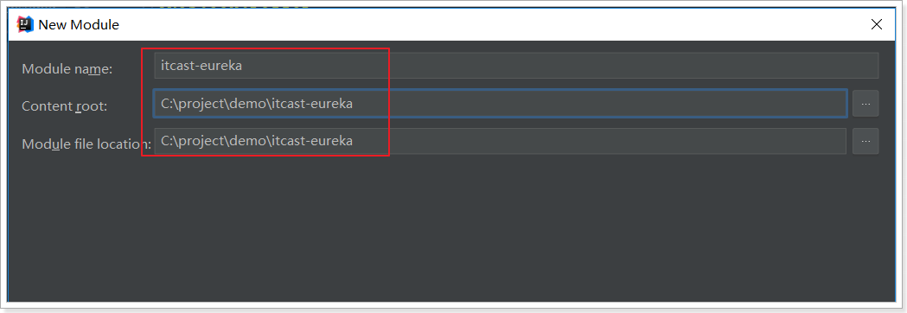
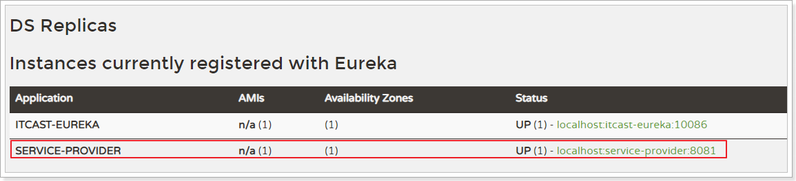
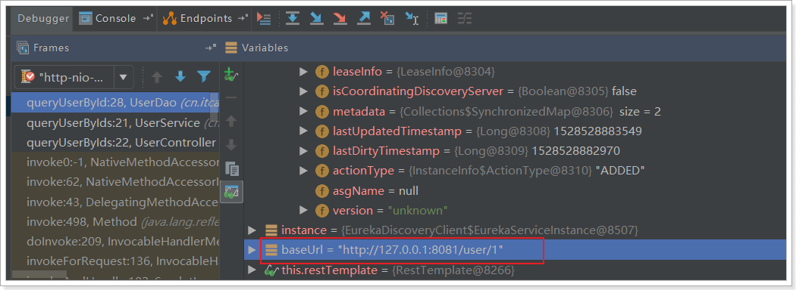
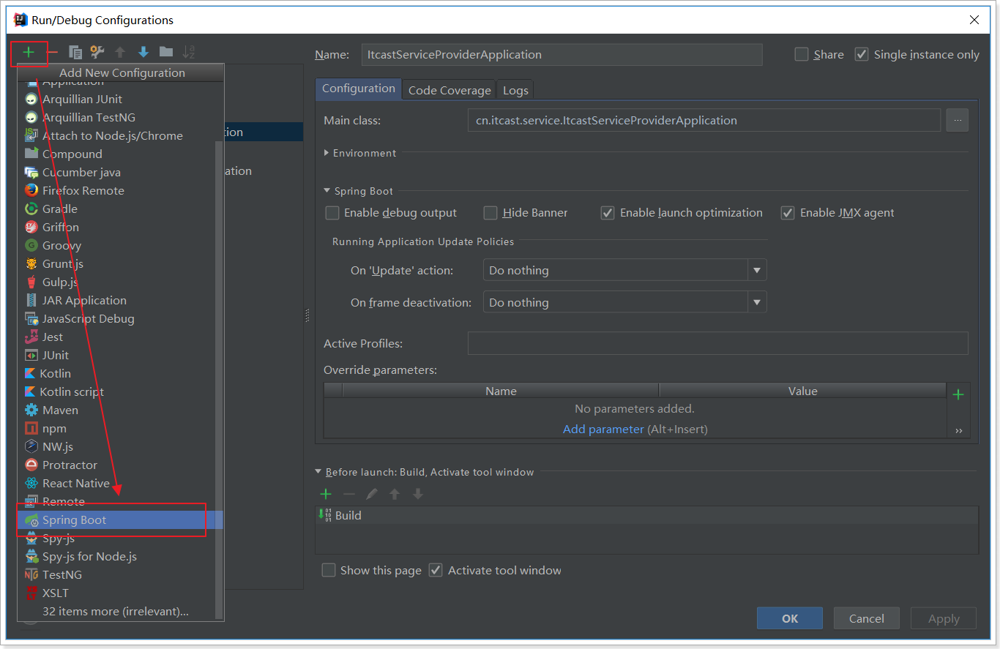
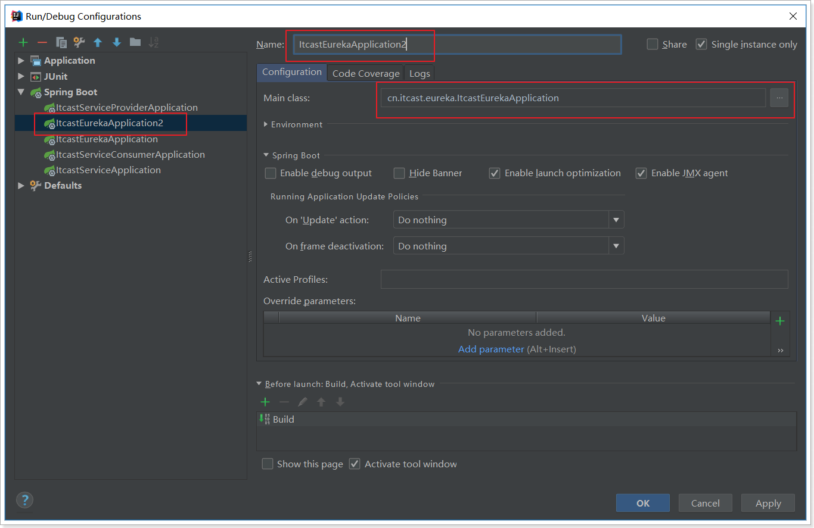
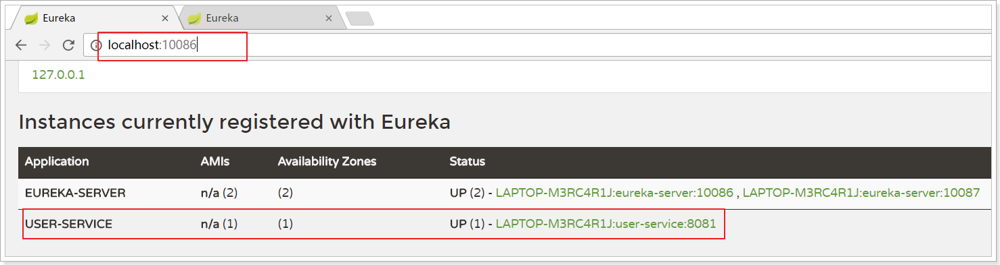

eureka是netflix公司开发的服务治理技术。用于注册服务，主要包括：
- 搭建eurakaService
- 注册到Eureka
- 从Eureka获取服务
此外还简单解释了： - Eureka架构
- 高可用性
- 失效剔除和自我保护
Eureka注册中心
认识Eureka
首先我们来解决第一问题，服务的管理。
问题分析
在刚才的案例中，itcast-service-provider对外提供服务，需要对外暴露自己的地址。而consumer（调用者）需要记录服务提供者的地址。将来地址出现变更，还需要及时更新。这在服务较少的时候并不觉得有什么，但是在现在日益复杂的互联网环境，一个项目肯定会拆分出十几，甚至数十个微服务。此时如果还人为管理地址，不仅开发困难，将来测试、发布上线都会非常麻烦，这与DevOps的思想是背道而驰的。
网约车
这就好比是 网约车出现以前，人们出门叫车只能叫出租车。一些私家车想做出租却没有资格，被称为黑车。而很多人想要约车，但是无奈出租车太少，不方便。私家车很多却不敢拦，而且满大街的车，谁知道哪个才是愿意载人的。一个想要，一个愿意给，就是缺少引子，缺乏管理啊。
此时滴滴这样的网约车平台出现了，所有想载客的私家车全部到滴滴注册，记录你的车型（服务类型），身份信息（联系方式）。这样提供服务的私家车，在滴滴那里都能找到，一目了然。
此时要叫车的人，只需要打开APP，输入你的目的地，选择车型（服务类型），滴滴自动安排一个符合需求的车到你面前，为你服务，完美！
Eureka做什么？
Eureka就好比是滴滴，负责管理、记录服务提供者的信息。服务调用者无需自己寻找服务，而是把自己的需求告诉Eureka，然后Eureka会把符合你需求的服务告诉你。
同时，服务提供方与Eureka之间通过“心跳”机制进行监控，当某个服务提供方出现问题，Eureka自然会把它从服务列表中剔除。
这就实现了服务的自动注册、发现、状态监控。
原理图
基本架构：

- Eureka：就是服务注册中心（可以是一个集群），对外暴露自己的地址
- 提供者：启动后向Eureka注册自己信息（地址，提供什么服务）
- 消费者：向Eureka订阅服务，Eureka会将对应服务的所有提供者地址列表发送给消费者，并且定期更新
- 心跳(续约)：提供者定期通过http方式向Eureka刷新自己的状态
入门案例
搭建EurekaServer
接下来我们创建一个项目，启动一个EurekaServer：
依然使用spring提供的快速搭建工具：
选择依赖：EurekaServer-服务注册中心依赖，Eureka Discovery-服务提供方和服务消费方。因为，对于eureka来说：服务提供方和服务消费方都属于客户端


完整的Pom文件：
<?xml version="1.0" encoding="UTF-8"?>
<project xmlns="http://maven.apache.org/POM/4.0.0" xmlns:xsi="http://www.w3.org/2001/XMLSchema-instance"
xsi:schemaLocation="http://maven.apache.org/POM/4.0.0 http://maven.apache.org/xsd/maven-4.0.0.xsd">
<modelVersion>4.0.0</modelVersion>
<groupId>cn.itcast.eureka</groupId>
<artifactId>itcast-eureka</artifactId>
<version>0.0.1-SNAPSHOT</version>
<packaging>jar</packaging>
<name>itcast-eureka</name>
<description>Demo project for Spring Boot</description>
<parent>
<groupId>org.springframework.boot</groupId>
<artifactId>spring-boot-starter-parent</artifactId>
<version>2.0.6.RELEASE</version>
<relativePath/> <!-- lookup parent from repository -->
</parent>
<properties>
<project.build.sourceEncoding>UTF-8</project.build.sourceEncoding>
<project.reporting.outputEncoding>UTF-8</project.reporting.outputEncoding>
<java.version>1.8</java.version>
<spring-cloud.version>Finchley.RC2</spring-cloud.version>
</properties>
<dependencies>
<dependency>
<groupId>org.springframework.cloud</groupId>
<artifactId>spring-cloud-starter-netflix-eureka-server</artifactId>
</dependency>
</dependencies>
<build>
<plugins>
<plugin>
<groupId>org.springframework.boot</groupId>
<artifactId>spring-boot-maven-plugin</artifactId>
</plugin>
</plugins>
</build>
</project>
编写application.yml配置：
server:
port: 10086 # 端口
spring:
application:
name: eureka-server # 应用名称，会在Eureka中显示
eureka:
client:
service-url: # EurekaServer的地址，现在是自己的地址，如果是集群，需要加上其它Server的地址。
defaultZone:
修改引导类，在类上添加@EnableEurekaServer注解：
@SpringBootApplication
@EnableEurekaServer // 声明当前springboot应用是一个eureka服务中心
public class ItcastEurekaApplication {
public static void main(String[] args) {
SpringApplication.run(ItcastEurekaApplication.class, args);
}
}
启动服务，并访问：http://127.0.0.1:10086


注册到Eureka
注册服务，就是在服务上添加Eureka的客户端依赖，客户端代码会自动把服务注册到EurekaServer中。
修改itcast-service-provider工程
- 在pom.xml中，添加springcloud的相关依赖。
- 在application.yml中，添加springcloud的相关依赖。
- 在引导类上添加注解，把服务注入到eureka注册中心。
具体操作
pom.xml
参照itcast-eureka，先添加SpringCloud依赖：
<!-- SpringCloud的依赖 -->
<dependencyManagement>
<dependencies>
<dependency>
<groupId>org.springframework.cloud</groupId>
<artifactId>spring-cloud-dependencies</artifactId>
<version>Finchley.SR2</version>
<type>pom</type>
<scope>import</scope>
</dependency>
</dependencies>
</dependencyManagement>
然后是Eureka客户端：
<!-- Eureka客户端 -->
<dependency>
<groupId>org.springframework.cloud</groupId>
<artifactId>spring-cloud-starter-netflix-eureka-client</artifactId>
</dependency>
完整pom.xml:
<?xml version="1.0" encoding="UTF-8"?>
<project xmlns="http://maven.apache.org/POM/4.0.0" xmlns:xsi="http://www.w3.org/2001/XMLSchema-instance"
xsi:schemaLocation="http://maven.apache.org/POM/4.0.0 http://maven.apache.org/xsd/maven-4.0.0.xsd">
<modelVersion>4.0.0</modelVersion>
<groupId>cn.itcast.service</groupId>
<artifactId>itcast-service-provider</artifactId>
<version>0.0.1-SNAPSHOT</version>
<packaging>jar</packaging>
<name>itcast-service-provider</name>
<description>Demo project for Spring Boot</description>
<parent>
<groupId>org.springframework.boot</groupId>
<artifactId>spring-boot-starter-parent</artifactId>
<version>2.0.6.RELEASE</version>
<relativePath/> <!-- lookup parent from repository -->
</parent>
<properties>
<project.build.sourceEncoding>UTF-8</project.build.sourceEncoding>
<project.reporting.outputEncoding>UTF-8</project.reporting.outputEncoding>
<java.version>1.8</java.version>
</properties>
<dependencies>
<dependency>
<groupId>org.springframework.boot</groupId>
<artifactId>spring-boot-starter-jdbc</artifactId>
</dependency>
<dependency>
<groupId>org.springframework.boot</groupId>
<artifactId>spring-boot-starter-web</artifactId>
</dependency>
<dependency>
<groupId>org.mybatis.spring.boot</groupId>
<artifactId>mybatis-spring-boot-starter</artifactId>
<version>1.3.2</version>
</dependency>
<dependency>
<groupId>mysql</groupId>
<artifactId>mysql-connector-java</artifactId>
<scope>runtime</scope>
</dependency>
<dependency>
<groupId>org.springframework.boot</groupId>
<artifactId>spring-boot-starter-test</artifactId>
<scope>test</scope>
</dependency>
<dependency>
<groupId>tk.mybatis</groupId>
<artifactId>mapper-spring-boot-starter</artifactId>
<version>2.0.4</version>
</dependency>
<dependency>
<groupId>org.springframework.cloud</groupId>
<artifactId>spring-cloud-starter-netflix-eureka-client</artifactId>
</dependency>
</dependencies>
<build>
<plugins>
<plugin>
<groupId>org.springframework.boot</groupId>
<artifactId>spring-boot-maven-plugin</artifactId>
</plugin>
</plugins>
</build>
<dependencyManagement>
<dependencies>
<dependency>
<groupId>org.springframework.cloud</groupId>
<artifactId>spring-cloud-dependencies</artifactId>
<version>Finchley.SR1</version>
<type>pom</type>
<scope>import</scope>
</dependency>
</dependencies>
</dependencyManagement>
</project>
application.yml
server:
port: 8081
spring:
datasource:
url: jdbc:mysql://localhost:3306/heima
username: root
password: root
driverClassName: com.mysql.jdbc.Driver
application:
name: service-provider # 应用名称，注册到eureka后的服务名称
mybatis:
type-aliases-package: cn.itcast.service.pojo
eureka:
client:
service-url: # EurekaServer地址
defaultZone: http://127.0.0.1:10086/eureka
注意：
- 这里我们添加了spring.application.name属性来指定应用名称，将来会作为应用的id使用。
引导类
在引导类上开启Eureka客户端功能
通过添加@EnableDiscoveryClient来开启Eureka客户端功能
@SpringBootApplication
@EnableDiscoveryClient
public class ItcastServiceProviderApplication {
public static void main(String[] args) {
SpringApplication.run(ItcastServiceApplication.class, args);
}
}
重启项目，访问Eureka监控页面查看

我们发现service-provider服务已经注册成功了
从Eureka获取服务
接下来我们修改itcast-service-consumer，尝试从EurekaServer获取服务。
方法与消费者类似，只需要在项目中添加EurekaClient依赖，就可以通过服务名称来获取信息了！
- pom.xml
<?xml version="1.0" encoding="UTF-8"?>
<project xmlns="http://maven.apache.org/POM/4.0.0" xmlns:xsi="http://www.w3.org/2001/XMLSchema-instance"
xsi:schemaLocation="http://maven.apache.org/POM/4.0.0 http://maven.apache.org/xsd/maven-4.0.0.xsd">
<modelVersion>4.0.0</modelVersion>
<groupId>cn.itcast.service</groupId>
<artifactId>itcast-service-consumer</artifactId>
<version>0.0.1-SNAPSHOT</version>
<packaging>jar</packaging>
<name>itcast-service-consumer</name>
<description>Demo project for Spring Boot</description>
<parent>
<groupId>org.springframework.boot</groupId>
<artifactId>spring-boot-starter-parent</artifactId>
<version>2.0.6.RELEASE</version>
<relativePath/> <!-- lookup parent from repository -->
</parent>
<properties>
<project.build.sourceEncoding>UTF-8</project.build.sourceEncoding>
<project.reporting.outputEncoding>UTF-8</project.reporting.outputEncoding>
<java.version>1.8</java.version>
</properties>
<dependencies>
<dependency>
<groupId>org.springframework.boot</groupId>
<artifactId>spring-boot-starter-web</artifactId>
</dependency>
<dependency>
<groupId>org.springframework.boot</groupId>
<artifactId>spring-boot-starter-test</artifactId>
<scope>test</scope>
</dependency>
<!-- Eureka客户端 -->
<dependency>
<groupId>org.springframework.cloud</groupId>
<artifactId>spring-cloud-starter-netflix-eureka-client</artifactId>
</dependency>
</dependencies>
<build>
<plugins>
<plugin>
<groupId>org.springframework.boot</groupId>
<artifactId>spring-boot-maven-plugin</artifactId>
</plugin>
</plugins>
</build>
<!-- SpringCloud的依赖 -->
<dependencyManagement>
<dependencies>
<dependency>
<groupId>org.springframework.cloud</groupId>
<artifactId>spring-cloud-dependencies</artifactId>
<version>Finchley.SR2</version>
<type>pom</type>
<scope>import</scope>
</dependency>
</dependencies>
</dependencyManagement>
</project>
- 修改配置
server:
port: 80
spring:
application:
name: service-consumer
eureka:
client:
service-url:
defaultZone: http://localhost:10086/eureka
- 在启动类开启Eureka客户端
@SpringBootApplication
@EnableDiscoveryClient // 开启Eureka客户端
public class ItcastServiceConsumerApplication {
@Bean
public RestTemplate restTemplate(){
return new RestTemplate();
}
public static void main(String[] args) {
SpringApplication.run(ItcastServiceConsumerApplication.class, args);
}
}
- 修改UserController代码，用DiscoveryClient类的方法，根据服务名称，获取服务实例：
@Controller
@RequestMapping("consumer/user")
public class UserController {
@Autowired
private RestTemplate restTemplate;
@Autowired
private DiscoveryClient discoveryClient; // eureka客户端，可以获取到eureka中服务的信息
@GetMapping
@ResponseBody
public User queryUserById(@RequestParam("id") Long id){
// 根据服务名称，获取服务实例。有可能是集群，所以是service实例集合
List<ServiceInstance> instances = discoveryClient.getInstances("service-provider");
// 因为只有一个Service-provider。所以获取第一个实例
ServiceInstance instance = instances.get(0);
// 获取ip和端口信息，拼接成服务地址
String baseUrl = "http://" + instance.getHost() + ":" + instance.getPort() + "/user/" + id;
User user = this.restTemplate.getForObject(baseUrl, User.class);
return user;
}
}
5）Debug跟踪运行：
生成的URL：

访问结果：
Eureka详解
接下来我们详细讲解Eureka的原理及配置。
基础架构
Eureka架构中的三个核心角色：
服务注册中心
Eureka的服务端应用，提供服务注册和发现功能，就是刚刚我们建立的itcast-eureka。
服务提供者
提供服务的应用，可以是SpringBoot应用，也可以是其它任意技术实现，只要对外提供的是Rest风格服务即可。本例中就是我们实现的itcast-service-provider。
服务消费者
消费应用从注册中心获取服务列表，从而得知每个服务方的信息，知道去哪里调用服务方。本例中就是我们实现的itcast-service-consumer。
高可用的Eureka Server
Eureka Server即服务的注册中心，在刚才的案例中，我们只有一个EurekaServer，事实上EurekaServer也可以是一个集群，形成高可用的Eureka中心。
服务同步
多个Eureka Server之间也会互相注册为服务，当服务提供者注册到Eureka Server集群中的某个节点时，该节点会把服务的信息同步给集群中的每个节点，从而实现数据同步。因此，无论客户端访问到Eureka Server集群中的任意一个节点，都可以获取到完整的服务列表信息。
动手搭建高可用的EurekaServer
我们假设要运行两个EurekaServer的集群，端口分别为：10086和10087。只需要把itcast-eureka启动两次即可。
1）启动第一个eurekaServer，我们修改原来的EurekaServer配置：
server:
port: 10086 # 端口
spring:
application:
name: eureka-server # 应用名称，会在Eureka中显示
eureka:
client:
service-url: # 配置其他Eureka服务的地址，而不是自己，比如10087
defaultZone: http://127.0.0.1:10087/eureka
所谓的高可用注册中心，其实就是把EurekaServer自己也作为一个服务进行注册，这样多个EurekaServer之间就能互相发现对方，从而形成集群。因此我们做了以下修改：
- 把service-url的值改成了另外一台EurekaServer的地址，而不是自己
启动报错，很正常。因为10087服务没有启动：
2）启动第二个eurekaServer，再次修改itcast-eureka的配置：
server:
port: 10087 # 端口
spring:
application:
name: eureka-server # 应用名称，会在Eureka中显示
eureka:
client:
service-url: # 配置其他Eureka服务的地址，而不是自己，比如10087
defaultZone: http://127.0.0.1:10086/eureka
注意：idea中一个应用不能启动两次，我们需要重新配置一个启动器：


然后启动即可。
3）访问集群，测试：

4）客户端注册服务到集群
因为EurekaServer不止一个，因此注册服务的时候，service-url参数需要变化：
eureka:
client:
service-url: # EurekaServer地址,多个地址以','隔开
defaultZone: http://127.0.0.1:10086/eureka,http://127.0.0.1:10087/eureka
10086：

10087：
服务提供者
服务提供者要向EurekaServer注册服务，并且完成服务续约等工作。
服务注册
服务提供者在启动时，会检测配置属性中的：eureka.client.register-with-eureka=true参数是否正确，事实上默认就是true。如果值确实为true，则会向EurekaServer发起一个Rest请求，并携带自己的元数据信息，Eureka Server会把这些信息保存到一个双层Map结构中。
- 第一层Map的Key就是服务id，一般是配置中的
spring.application.name属性 - 第二层Map的key是服务的实例id。一般host+ serviceId + port，例如：
locahost:service-provider:8081 - 值则是服务的实例对象，也就是说一个服务，可以同时启动多个不同实例，形成集群。
服务续约
在注册服务完成以后，服务提供者会维持一个心跳（定时向EurekaServer发起Rest请求），告诉EurekaServer：“我还活着”。这个我们称为服务的续约（renew）；
有两个重要参数可以修改服务续约的行为：
eureka:
instance:
lease-expiration-duration-in-seconds: 90
lease-renewal-interval-in-seconds: 30
- lease-renewal-interval-in-seconds：服务续约(renew)的间隔，默认为30秒
- lease-expiration-duration-in-seconds：服务失效时间，默认值90秒
也就是说，默认情况下每个30秒服务会向注册中心发送一次心跳，证明自己还活着。如果超过90秒没有发送心跳，EurekaServer就会认为该服务宕机，会从服务列表中移除，这两个值在生产环境不要修改，默认即可。
但是在开发时，这个值有点太长了，经常我们关掉一个服务，会发现Eureka依然认为服务在活着。所以我们在开发阶段可以适当调小。
eureka:
instance:
lease-expiration-duration-in-seconds: 10 # 10秒即过期
lease-renewal-interval-in-seconds: 5 # 5秒一次心跳
服务消费者
获取服务列表
当服务消费者启动时，会检测eureka.client.fetch-registry=true参数的值，如果为true，则会拉取Eureka Server服务的列表只读备份，然后缓存在本地。并且每隔30秒会重新获取并更新数据。我们可以通过下面的参数来修改：
eureka:
client:
registry-fetch-interval-seconds: 5
生产环境中，我们不需要修改这个值。
但是为了开发环境下，能够快速得到服务的最新状态，我们可以将其设置小一点。
失效剔除和自我保护
服务下线
当服务进行正常关闭操作时，它会触发一个服务下线的REST请求给Eureka Server，告诉服务注册中心：“我要下线了”。服务中心接受到请求之后，将该服务置为下线状态。
失效剔除
有些时候，我们的服务提供方并不一定会正常下线，可能因为内存溢出、网络故障等原因导致服务无法正常工作。Eureka Server需要将这样的服务剔除出服务列表。因此它会开启一个定时任务，每隔60秒对所有失效的服务（超过90秒未响应）进行剔除。
可以通过eureka.server.eviction-interval-timer-in-ms参数对其进行修改，单位是毫秒，生产环境不要修改。
这个会对我们开发带来极大的不变，你对服务重启，隔了60秒Eureka才反应过来。开发阶段可以适当调整，比如：10秒

自我保护
我们关停一个服务，就会在Eureka面板看到一条警告：

这是触发了Eureka的自我保护机制。当一个服务未按时进行心跳续约时，Eureka会统计最近15分钟心跳失败的服务实例的比例是否超过了85%。在生产环境下，因为网络延迟等原因，心跳失败实例的比例很有可能超标，但是此时就把服务剔除列表并不妥当，因为服务可能没有宕机。Eureka就会把当前实例的注册信息保护起来，不予剔除。生产环境下这很有效，保证了大多数服务依然可用。
但是这给我们的开发带来了麻烦， 因此开发阶段我们都会关闭自我保护模式：（itcast-eureka）
eureka:
server:
enable-self-preservation: false # 关闭自我保护模式（缺省为打开）
eviction-interval-timer-in-ms: 1000 # 扫描失效服务的间隔时间（缺省为60*1000ms）